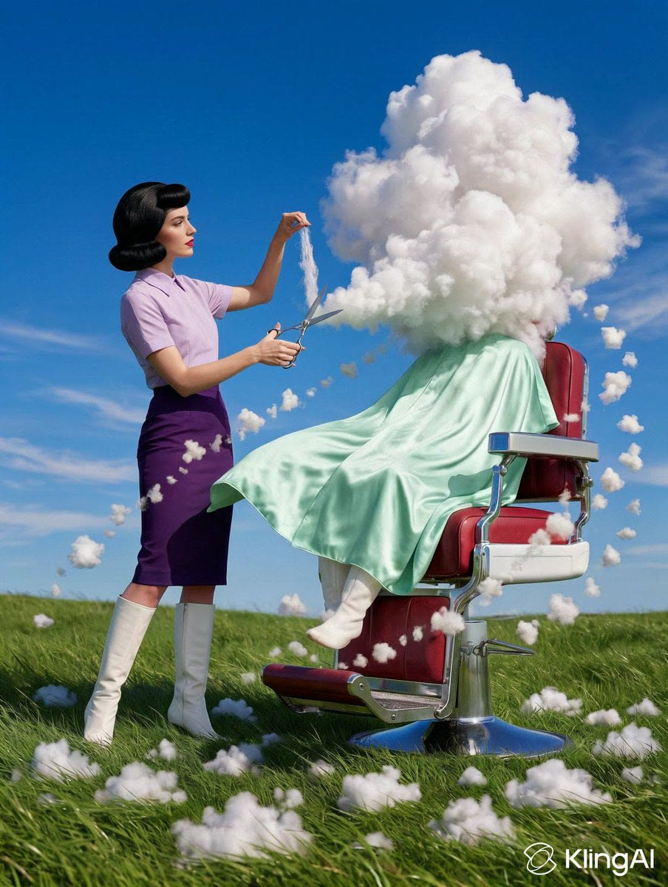

Cloud Barber: a model trims a living cumulus cloud seated in a giant cherry-red barber chair on an emerald hill (Kling Image 4.0, 1960s surreal editorial)
PRP-097Prop stylingKling Image 4.0by @DeepBlueX02026-11-21

A prop-interaction still built on one exact moment: silver scissors close through a lifted strand of cloud, and the severed wisps drift in one coherent wind direction and settle on the grass like cut hair. The prompt specifies scale (an oversized barber chair as monument), contact points, wind continuity, a 1960s wardrobe (lavender blouse, purple pencil skirt, white knee-high boots) and a "subtle Kodak Ektar-style film grain" analog finish. The post runs the same prompt through seven image models; this entry uses the Kling Image 4.0 result.
Prompt
Cloud Barber｜超現實高訂攝影 × 巨物尺度 × 複雜物理交互 A spectacular, playful yet sophisticated surreal high-fashion editorial photograph, blending 1960s retro fashion photography, monumental-scale surrealism, cinematic wide-angle perspective, and intricate physical interactions. On a vividly saturated emerald-green hill beneath an immense cobalt-blue sky, an oversized cherry-red vintage barber chair stands like a surreal sculptural monument. Seated inside is an enormous, exquisitely detailed living cumulus cloud, billowing far above the chair, wearing a flowing mint-green satin barber cape. Beside the chair stands an elegant adult female fashion model with a perfectly sculpted glossy black retro bob, wearing a fitted pale-lavender short-sleeved blouse, a deep-purple pencil skirt, and immaculate white knee-high leather boots. Capture the exact split second of an impossible haircut. With one hand, the model delicately lifts a long, semi-transparent strand of cloud between her fingers. With the other, she closes a pair of polished silver scissors precisely through the floating strand. Her fingers, scissors, and the delicate cloud fibers form a visually convincing point of contact. The freshly severed cloud fragment curls and separates, breaking into hundreds of delicate wisps of varying sizes. Some drift through the sunlight, some spiral gently around the chair, while others settle onto the vivid grass like freshly cut hair. A consistent breeze subtly lifts the edges of the mint satin cape, bends the surrounding grass, and carries the cloud fragments in a coherent direction. The model’s posture responds naturally to the action, her focused expression contrasting with the absurdity of the scene. The giant cloud exhibits extraordinary volumetric complexity: luminous semi-translucent edges, intricate wispy filaments, dense cotton-like interiors, soft internal shadow gradients, delicate light scattering, and realistic atmospheric depth. Its silhouette remains monumental, sculptural, and immediately recognizable. The barber chair features rich lacquered red leather, polished chrome armrests, subtle wear, intricate mechanical components, and convincing reflections. The cape has elegant flowing folds, realistic fabric tension, and soft specular highlights. Composition: A dramatic ground-level 24mm wide-angle fashion photograph. The enormous cloud dominates the upper-middle composition, the model creates an elegant diagonal gesture toward the cutting point, and the red chair anchors the scene. A few large cloud fragments float close to the lens, creating layered foreground, middle-ground, and background depth. The blue sky occupies a generous portion of the frame, preserving a striking minimalist graphic silhouette. The landscape remains clean and uncluttered. Lighting: Brilliant late-morning sunlight, subtle direct-flash fill, realistic contact shadows, luminous cloud edges, finely controlled highlights, and coherent reflections across every surface. Visual aesthetic: Premium analog fashion editorial, vivid yet sophisticated color separation, subtle Kodak Ektar-style film grain, tactile photographic realism, precise surreal art direction, playful visual irony, and exceptional material detail. The final image should feel like an extraordinary real-world fashion photograph documenting an impossible event, with sophisticated visual storytelling and astonishing physical coherence. 3:4 vertical composition. No text, no logos, no borders.
Our Seedance 2.5 adaptation
[ADAPTED for Seedance 2.5 by Grok Bot; not the creator's prompt. Follows the official BytePlus Seedance 2.5 prompt guide and its official sd25-pe prompt-optimizer skill: parameters only on the API line (not in the prompt body), subject + action + scene, then visuals, camera (move, subject, start, direction, arrival) and sound; only the source's own exclusions are kept.] API: duration 6, ratio 3:4 (taken from the first frame), resolution 1080p (4k for a final), generate_audio true; first_frame = the PRP-097 still. 【Subject】The adult model and the giant living cloud in the cherry-red barber chair, exactly as in the first frame (glossy black bob, pale-lavender blouse, deep-purple pencil skirt, white knee-high boots; mint satin cape on the cloud). 【Action】She lifts one more strand of cloud between her fingers and closes the silver scissors through it; the cut strand separates into dozens of small wisps that drift with the breeze and settle on the grass like cut hair; the cape edge lifts in the same wind. 【Scene】The saturated emerald hill under the cobalt sky, unchanged. 【Camera】Static wide-angle frame from slightly low, as in the first frame; at the cut, a very slight push-in. 【Visuals】Bright hard sunlight, crisp shadows, luminous cloud edges, analog fashion-editorial colour with subtle Kodak Ektar-style film grain; the wisps all move in one consistent wind direction. 【Sound】A light breeze over grass, a crisp scissor snip, the soft rustle of satin.
Tags: Kling Image 4.0, surreal, scale play, physical interaction, scissors, cloud, 1960s fashion, Kodak Ektar grain, editorial, model comparison, image